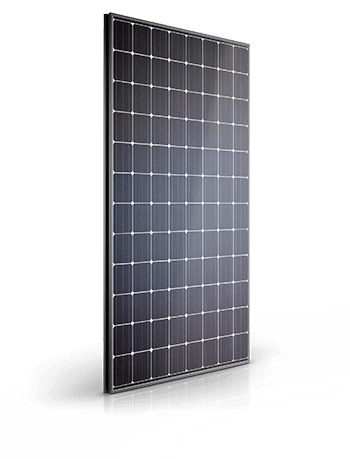
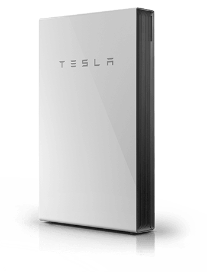

Tesla Energy
Tesla Energy, um conjunto de baterias que fornecem energia limpa para residências e escritórios. O produto é o Powerwall, uma bateria que armazena energia elétrica obtida através de painéis solares e abastece a casa em momentos mais oportunos.
A bateria da Tesla também pode ser útil em países que cobram mais pela energia elétrica nos horários de pico: quando a tarifa estiver mais alta, basta ligar o Powerwall e diminuir a dependência da rede tradicional. Além disso, em caso de queda de energia, o produto também pode ser usado como um gerador para abastecer toda a casa.
 Tesla Solar Panels & Tesla Powerwall
Universidade Paulista

Site por: Cássio Luiz Fuentes RA:D2773A5 - Site oficial Tesla